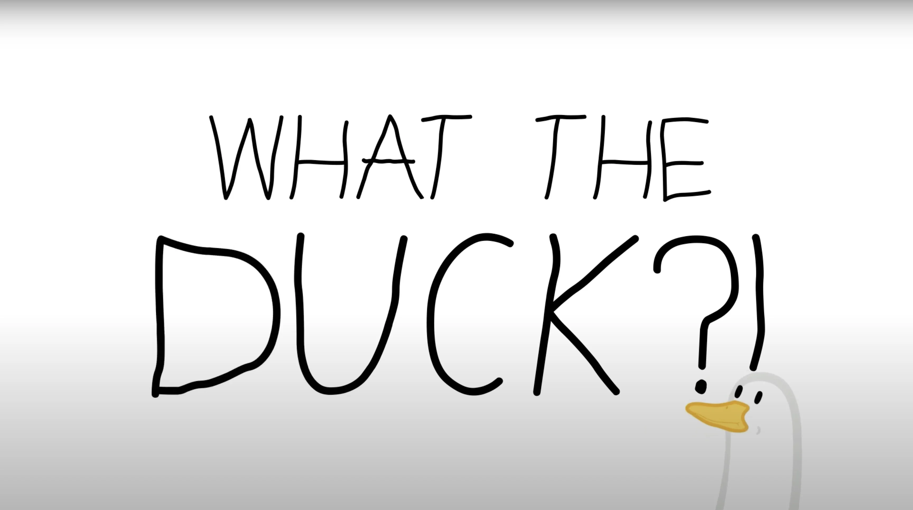

Workflow:
The project started with preproduction and figuring out the story and
the characters. Storyboard and character sketches on paper helped during this stage.
The Characters, backgrounds, and other needed objects in the animation were
created in Adobe Illustrator and Photoshop. The characters have been rigged in
After Effects (partially with Rubber Hose).
Animation was done primarily in After Effects and some small tweaks in Photoshop.
The Sound of the video isn't too great as i couldn't get any Sound Designer
from Uni to help me with this part of the video, but some basic clean up of
the recordings was done in Adobe Audition.
Software:
Adobe Photoshop, Illustrator, After Effects, Premiere Pro and Audition.
Connected Links:
Back to home: Homepage